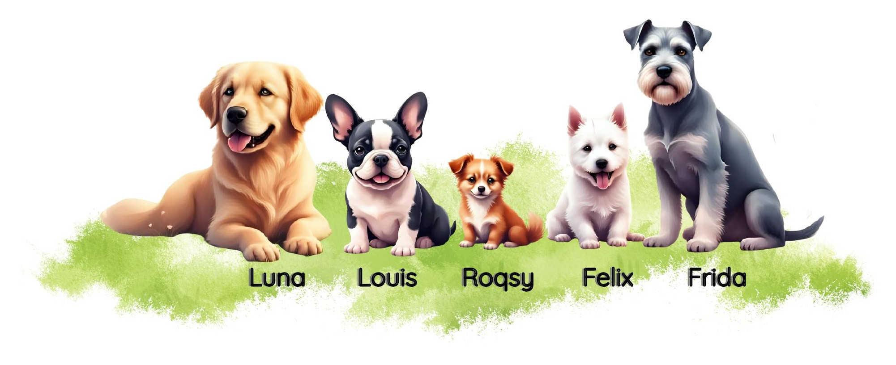

Hunde-Weisheit, Alltag, Chaos und Tipps aus Hundesicht – von Felix, Roqsy, Louis, Frida und Luna.

Neugierig, lebendig und immer zuerst am Start, bevor er nachdenkt – meistens kurz bevor's schiefgeht. „Ich war nicht dreckig. Ich war draußen.“
Winzig, hochsensibel und nach außen ein lautstarker Rambo – innerlich vorsichtig bei allem, was groß, laut oder unsichtbar ist. „Wind ist unsichtbar und deshalb grundsätzlich verdächtig.“
Gemütlich, genussorientiert und ein echter Verhandlungskünstler, wenn es um Portionsgrößen geht. „Ich bin nicht verfressen. Ich überprüfe nur sehr gewissenhaft die Vorräte.“
Erfahren, ruhig und klug – hat schon fast alles gesehen und kommentiert jugendlichen Übereifer mit Gelassenheit. „Langsam ist nicht dasselbe wie planlos.“
Warmherzig, verlässlich und die verbindende Figur im Familienalltag. „Familie heißt: Alle haben einen Plan. Ich passe auf, dass trotzdem alles funktioniert.“